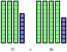
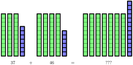
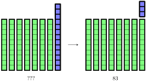
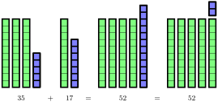
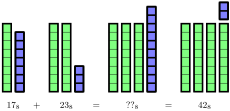

Understand how addition can be visualized on a number line.
Develop effective strategies for mental addition for 2-digit and 3-digit numbers.
The idea of "carrying the one" is one of the many phrases that are taught when it comes to arithmetic. We are going to take an unusual approach in that we’re going to talk about what it is and how it works, but then we’re going to talk about why it’s not that important in practice (at least these days).
Before we can talk about "carrying the one," we first need to think about what addition is. One way to think about addition is that you’re starting with a certain quantity, and then we’re going to combine it with another quantity and look at how much we have in total. When working with young children, the picture looks something like this:
But as the numbers get larger, our methods need to get more sophisticated. First, instead of just scattered blocks as we have above, we’re going to use base-10 blocks. And then we’re going to have to think logically about how we organize that information. Here is a diagram for \(37 + 46\text{:}\)

The most natural thing for us to do here is to reorganize the information so that the unit cubes are together and the tens rods are together.

This diagram highlights the reason that "carrying the one" is part of the process. We have run into the situation that we have "too many" unit cubes. They spill over to a number larger than what we can account for with the place value system. And so that’s where we trade in 10 units for 1 rod, which is the concept that is attached to "carrying the one."

Activity25.1.Addition with Base-10 Blocks.
Try it!
Draw a base-10 blocks diagram to represent \(35 + 17\) and compute the result.
Solution.

The idea of "carrying the one" was developed for the purpose of pencil-and-paper arithmetic. If you needed to add a long column of numbers (and there were once good jobs out there for people who can do this quickly and accurately), then you needed a notation for the number of groups of 10 that needed to be accounted for in the next larger place value. But at this time, there is not a lot of value in this particular calculation because we can have computers do it many times faster than we can and they do it with perfect accuracy.
But this does not mean that there is zero value in humans performing arithmetic. There are times when it’s handy to be able to do a 2-digit or 3-digit addition problem mentally instead of having to reach for a calculator. Some people are able to add in columns in their heads, but many find it difficult to keep track of all the different digits floating around. So we are going to work with addition on the number line as our model for thinking about mental arithmetic.
Addition on the number line is about movement. The first number represents your starting position and the second number represents how far to the right you move from that position. Here is what \(2+3\) looks like:
For small numbers, it is easy enough to just count out the steps. But for a larger calculation, counting is simply too slow. And in order to simplify the diagram, we’re going to use just the part of the number line that’s relevant. Here is the setup to calculate \(37 + 46\text{:}\)
Of course, the challenge is to figure out what the value of is going to be.
Remember that our goal is to set ourselves up for mental arithmetic. So we are going to set up this picture in a way that can be done with simple mental calculations, rather than working with base-10 blocks or digit manipulations. The key trick is to break the motion of 46 steps to the right into two separate motions: 40 steps to the right followed by 6 more steps to the right. In the diagram below, see if you can work out the values of both ? and ?? by thinking through the picture.
With a little bit of mental effort, you should be able to determine that ? is 77 and ?? is 83.
What’s interesting about this is that you probably didn’t have to think about "carrying the one" at all when going from to When looking at the number line, you would never make the mistake of thinking that \(77 + 6\) is 73 (forgetting to "carry the one") or 713 (incorrectly placing the between the ones digit and tens digit). But when we teach children to add in columns, they make these mistakes with regularity. And this highlights the difference between working with adults and working with children. Many children are still developing their basic number sense, but most adults already have it, and so we can leverage that number sense into methods that feel far more intuitive for adults than children.
Activity25.2.Two-Step Addition on a Number Line.
Here is the full diagram for the calculation \(37 + 46\) using a number line.
The same idea can work for larger numbers, and it’s not significantly more mentally taxing.
Try it!
Calculate \(271 + 119\) using a number line.
Solution.
Activity25.4.Mental Addition.
Drawing the number line is important to practice the mental organization, but in order for this to be a mental calculation, you need to be able to do it without drawing the picture. (But you might find it helpful to have the picture in your head!)
Draw a base-10 blocks diagram to represent \(38 + 15\) and compute the result.
2.
Draw a base-10 blocks diagram to represent \(195 + 219\) and compute the result.
3.
Think about (do not draw) the diagram you would need to represent \(48 + 37\) and compute the result from that mental picture. Did you find the visualization helpful or distracting? Explain what was helpful or distracting about the mental image for you.
Think about (do not draw) the number line diagram you would need to calculate \(23 + 38\) and compute the result from that mental picture. Do you prefer this visualization or the blocks visualization? Why?
4.
Practice your mental arithmetic by performing the following calculations.
Here is a trick for mental arithmetic when one of the numbers is close to a multiple of 10 or 100. Figure out how far you are from that "nice" number and move that many steps first. Then the remaining movement is much easier to do. Here’s a visualization of \(97 + 58\text{:}\)
Draw a number line diagram using the technique above to calculate \(98 + 77\text{.}\)
2.
Draw a number line diagram using the technique above to calculate \(49 + 36\text{.}\)
3.
Practice your mental arithmetic by performing the following calculations.
Which of the calculations did you find to be easier with this technique? Which were harder? What are the key differences that make one easier than the other?
We are going to spend this time looking at numbers from the Greek perspective. This means that we’re going to think of numbers as being sticks of specific lengths. With this in mind, addition of numbers is represented by finding the total length of two sticks put end-to-end.
One of the reasons that the Greeks liked this framework is because it allows us to work with abstract ideas about arithmetic rather than actually having to measure out physical lengths. We can simply replace the numbers with variables and the picture remains meaningful.
Draw a diagram to represent the calculation \(b + a\) and compare your diagram to the diagram of \(a + b\text{.}\) Explain why the two end results are the same length. Which property of addition is being demonstrated by this?
2.
Using this framework, the meaning and validity of the associative property of addition is made much more apparent as well.
Determine which diagram represents \((a + b) + c\) and which one represents \(a + (b + c)\text{.}\) Explain how you reached your conclusion.
Recall that the base-8 number system is a system where we work in groups of 8 instead of groups of 10. The concept of addition carries over perfectly as long as the group sizes are respected.

Draw a base-8 blocks diagram to represent \(25_8 + 34_8\) and compute the result.
2.
Draw a base-8 blocks diagram to represent \(134_8 + 155_8\) and compute the result.
3.
Think about (but do not draw) the diagram you would need to represent \(34_8 + 17_8\) and compute the result from that mental picture.
Section25.3Deliberate Practice: Addition Practice
Algebra is a skill, which means it requires practice to become proficient. But it will take more than rote repetition to get there. Deliberate practice is the thoughtful repetition of a task. For each of these sections, you will be given a list of specific skills or ideas to focus on as you practice thinking through the problems.
Focus on these skills:
Do the problem mentally before drawing any part of the number line diagram.
Draw out the steps of adding the different place values on the number line diagram.
Instructions: Perform the given calculation mentally, then draw out a number line diagram to perform the calculation.
1.
Calculate \(43 + 25\) mentally and on a number line.
2.
Calculate \(18 + 38\) mentally and on a number line.
3.
Calculate \(26 + 49\) mentally and on a number line.
4.
Calculate \(76 + 19\) mentally and on a number line.
5.
Calculate \(54 + 21\) mentally and on a number line.
6.
Calculate \(35 + 45\) mentally and on a number line.
7.
Calculate \(29 + 52\) mentally and on a number line.
8.
Calculate \(276 + 112\) mentally and on a number line.
9.
Calculate \(135 + 349\) mentally and on a number line.
10.
Calculate \(289 + 428\) mentally and on a number line.
Section25.4Closing Ideas
Addition is the very first arithmetic operation that children learn. The idea of putting collections of objects together into a single collection fits perfectly with the idea of counting. But as the collections of objects become larger, we are forced to find different ways to organize that information, and that’s where many of the concepts we have for numbers come from. It’s all about organizing information in a useful way.
Once we have the framework in place, we can then move on to see how the organization is helpful. As we discussed earlier, adding in columns used to be an important organizational framework when all of these calculations were done by hand. And it is that framework that leads us to ideas like "carrying the one." In today’s world, that specific way of organizing information is less useful. This doesn’t mean that it’s wrong or that it can’t still be used. But we are seeing that there is more value in helping students develop flexible ways of thinking rather than focusing on computational algorithms.
Being able to think about numbers in different bases is important if you are interested in learning more about how computers work, especially if you want to get into programming. Being able to work in the framework of the number line helps with any job that uses geometric ideas, including many forms of design. And those are the reasons why we’re taking the time to explore these concepts here. Even though we’ve been discussing addition, we’re really just building a framework to help you work with numbers in whatever context you will see them in the future.
As we continue to explore mathematical thinking, it will be helpful to take time to reflect on the new ways of looking at math that you’re seeing. A lot of students struggle with their confidence when it comes to math, and that’s usually the result of being told that there is only one way of doing things that doesn’t really connect with them. That is an unfortunate legacy of the current math education system. But it’s never too late to start something new. Hopefully, the approaches that you see in the coming sections will provide you with an opportunity to overturn past negative experiences and help you to see both the logic and the beauty of mathematics.
Section25.5Going Deeper:Automaticity with Arithmetic
When it comes to arithmetic, faster is not always better. In fact, there a number of people who are not naturally fast at arithmetic, and yet have become very talented mathematicians. However, this does not mean that there is no value at all to being able to do so arithmetic moderately quickly and confidently.
It is easiest to understand this concept by using an analogy with reading. Consider the word cat. As an adult, you probably see the word all at once and can recognize that it’s the word cat (as opposed to dog or catastrophe). But let’s think about what goes into learning the word cat as a child. For young children, a common reading technique is to "sound out" the various letters. Rather than seeing cat all at once, it’s seen as "c - a - t" (with each letter sounded out individually). And after making the sounds in faster and faster succession, the child will eventually understand that it is the word cat.
There’s an interesting thing that happens to the brain with reading as people get better at it. It actually starts taking less and less brain power to read as you do more of it. The child that is sounding out the individual letters of the word cat is investing a significantly larger part of their brain than an adult that immediately recognizes it. Basically, our brains get used to seeing the word so often that we have a mental shortcut that allows us to identify it right away.
This skill doesn’t make us speed readers, but it does allow us to read fluently. As sentences become longer and their meanings become more complex, the fact that our brains don’t have to work hard to recognize words gives us more brain space to think about the ideas rather than using it all up just figuring out which words are on the page.
A similar thing happens with mathematics. Students that struggle with basic arithmetic and algebra are often unable to take in the larger mathematical ideas because their brains are bogged down in the calculations. But even a moderate level of mathematical fluency creates space for students to start to have mathematical ideas and make important connections.
The ability to immediately recognize basic arithmetic facts and fluidly perform simple algebraic manipulations is known as automaticity. Mathematical automaticity is the mathematical equivalent of sight words. It’s when you can recognize that \(7 + 4 = 11\) and \(6 \cdot 9 = 54\) without needing to do a bunch of counting or other mental manipulations.
There is a thin line between the practice required to develop automaticity and what is often called "drill and kill" (the endless repetition of calculations that leads to the destruction of all motivation). To understand this, we can draw from another analogy, but this time with music. In the context of learning a musical instrument, there are a core set of exercises (scales and arpeggios) that students practice. These exercises are rarely an end for themselves. That is, nobody goes to concerts to listen to someone simply play scales. However, fluency with scales and arpeggios leads to greater skill in playing more complex music, as the complex music is built out of scales and the intervals found in arpeggios. Another way of saying this is that those exercises help to build the musician’s musical vocabulary, so that they are better able to "understand" the music that they’re learning.
The same is true for mathematics. The reason math teachers hope for students to reach a certain level of fluency with basic calculations is that our larger mathematical ideas are often built on those calculations. Basic arithmetic is required for almost every pursuit within mathematics, and almost every mathematical idea is built from some experience that can be grounded back in our experiences of basic arithmetic.
As hinted at above, the development of automaticity requires regular practice. Fortunately, the amount of practice is not very significant. Flash cards and online arithmetic practice programs are readily available, and there are cheap or free options. All it takes for many people is just a few minutes a day for a couple weeks to reach a reasonable level of proficiency.
What skills should you practice? Interestingly, it’s the same basic arithmetic drills that we would use with elementary school children:
Addition: One-digit plus one-digit
Subtraction: One-digit or two-digit minus one digit
Multiplication: One-digit multiplied by one-digit
Division: The inverses of the multiplication problems
You are encouraged to keep a record of your progress. You might be quite surprised to see how much progress you make in a short period of time with just a little bit of practice. These exercise has been used with college students, and they have reported that their overall level of mathematical confidence has risen as a result of doing them. And in many senses, that is one of the most important obstacles that students who are struggling with mathematics can overcome. The pattern of mathematical self-doubt that a wide range of students bring with them to college is something that can hold them back from accomplishing their goals, and it’s incredible how a simple exercise like this can reap positive benefits.
In Section 28.5, we’ll talk about how to build larger mental arithmetic skills on the foundation of this basic arithmetic automaticity.